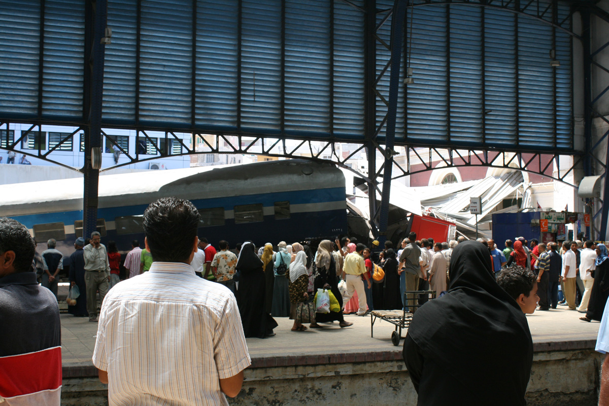

Alexandria Train Crash
After almost a year of being in Egypt, we finally decided to go up to Alexandria today. We took the 9:00 AM train from Cairo and the ride went smooth until we were just outside the final Mahatat Misr station, where we were delayed for over an hour until pulling up to a platform.
Immediately after we got off the train we saw the reason for the delay. A train had rammed into the station, apparently at full speed, derailing the first three cars—the engine, the generator, and the first actual cabin. Part of the station itself was damaged, as was, ironically enough, a parked fire truck.

Click to enlarge
{kind=link}
The train crashed at around 8 AM and was empty. By 12:30 (when we got there), Egyptian Railway repair crews were lifting the damaged cabin off the tracks.
{kind=link}
{kind=link}
By 6:00 PM, when we arrived back at the station to return to Cairo, the repairmen were working on lifting the engine and had apparently already extricated the generator car.
{kind=link}
Since two platforms were out of commission, trains were shuffled around all day, causing major delays. Our train ride back to Cairo took over four hours instead of the usual two.
As far as I know, nobody was killed as the train was empty. I don’t know about injuries, since I arrived on the scene several hours after the actual accident.
Needless to say, it was exciting—in a macabre sort of way. I’ve read so much about Egyptian train crashes—I got to see the aftermath of one. :)
I'll post the full set of pictures tomorrow on Flickr.
Update
I posted our photos of the accident at Flickr. They are licensed under a Creative Commons Attribution license, so you can use them however you want.
Nancy has also blogged about the accident at our family blog.
Additionally, the online Egyptian news site Youm7 has posted an update (in Arabic). According to their report, the accident was caused by a brake failure as the train travelled from the nearby Sidi Gaber train station. It was indeed empty, fortunately, and there were no fatalities. Two of the crew members were injured in addition to a vendor—since there are snack booths at the end of each platform, he must have gotten smashed. There are conflicting statements as to the cause of the accident. Some claim neglect and disrepair; others sabotage. I’m leaning towards neglect—those trains are ancient.